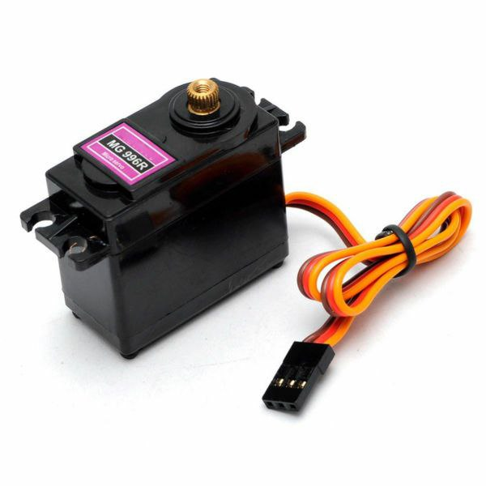

Servo Motor MG996 🤖
Key Features:
-
High Torque 💪:
The MG996 servo motor is capable of delivering a high torque output, typically around 9-11 kg·cm at 4.8V and up to 12 kg·cm at 6V. This makes it powerful enough to handle heavier loads compared to standard servos, which is why it's commonly used in robotics and large mechanical systems. -
Speed 🕓:
The MG996 has a speed of approximately 0.2 seconds per 60° at 4.8V and 0.18 seconds per 60° at 6V. This speed is fast enough for most applications requiring controlled movement but isn't as fast as high-speed servos. -
Operating Voltage ⚡:
The MG996 servo typically operates between 4.8V and 6.0V, allowing it to be powered by a range of standard voltage sources like a typical 5V microcontroller or battery pack. -
Durable Gear Mechanism ⚙️:
The MG996 is equipped with metal gears, providing it with added durability and the ability to withstand higher mechanical stress compared to plastic-geared servos. This feature makes it suitable for demanding tasks like lifting or moving heavy objects. -
Control and Precision 🎯:
Like other servos, the MG996 is controlled using Pulse Width Modulation (PWM) signals, which determine the position of the motor shaft. It offers precise control, making it ideal for applications requiring detailed position adjustments. -
Rotation Range 🔄:
The MG996 can rotate within a typical range of 0° to 180°, but depending on the servo and configuration, it may offer more flexibility, including some continuous rotation features in certain cases.
How It Works ⚙️:
-
PWM Control:
The MG996 servo motor uses Pulse Width Modulation (PWM) to control its movement. The position of the motor shaft is determined by the width of the PWM signal:
• A pulse width of about 1.5 ms usually moves the servo to its neutral position (typically 90°).
• Shorter pulses (e.g., 1 ms) move the servo closer to 0°.
• Longer pulses (e.g., 2 ms) move the servo closer to 180°. -
Internal Feedback Mechanism:
The servo includes an internal potentiometer that provides feedback on the motor's position, allowing it to adjust its movement and maintain the desired position. This feedback mechanism ensures precise and accurate control of the servo's shaft. -
Motor Shaft Rotation:
The servo motor’s shaft is driven by an internal motor that rotates based on the PWM signal. This shaft is connected to metal gears, which help transfer the rotational force with higher torque and precision compared to cheaper servos with plastic gears.
Common Uses 🔧:
-
Robotics 🤖:
The MG996 is commonly used in robot arms, wheeled robots, and articulated robots, providing the necessary torque for lifting, rotating, or moving parts. -
RC Models 🚗:
It’s frequently found in RC cars, airplanes, and boats, where high torque and durability are needed for steering or controlling flight surfaces. -
Mechanical Projects 🏗️:
For mechanical control systems like automated doors, lifting mechanisms, or actuators, the MG996 provides precise motion control under load. -
Camera Gimbals 📸:
In camera stabilizers or gimbals, the MG996 can be used to adjust the camera's orientation with high precision to maintain smooth footage during movement. -
Automation Systems 🏁:
In automated systems that require rotary motion (like conveyor belts, positioners, or adjustable platforms), the MG996 can be used to perform precise movements.
Advantages ✅:
- High Torque 💪: With its robust metal gear mechanism, the MG996 can handle demanding tasks requiring high torque, which makes it ideal for heavy-duty applications.
- Durability 🛠️: Thanks to its metal gears and reliable construction, the MG996 is built to last, making it well-suited for long-term use in robotic systems and vehicles.
- Precise Control 🎯: The servo provides precise angular control via PWM, enabling fine adjustments for positioning in mechanical projects.
- Versatile Use 🔄: Suitable for a wide range of applications, from robotics to RC vehicles and even mechanical automation systems.
Limitations 🚫:
- Noise 📣: The MG996 can produce noticeable noise during operation due to its metal gear mechanism, which can be an issue in noise-sensitive environments.
- Size 📏: Being a high-torque servo, the MG996 is a little larger and heavier than standard servos, which might not be suitable for projects where space and weight are crucial factors.
- Power Consumption ⚡: The MG996 requires more power than smaller servos, so it may need a dedicated power supply if used in projects that demand high performance or prolonged use.
- Limited Rotation 🔄: Though it offers 180° of rotation, its range is still limited compared to continuous rotation servos.
Conclusion 🏁:
The MG996 servo motor is a powerful, durable, and versatile component suitable for a variety of applications where high torque and precise control are needed. Whether you're building a robot, an RC vehicle, or a mechanical system requiring strong, reliable movement, the MG996 is a great choice. Despite some noise and power considerations, its performance, particularly in high-torque tasks, makes it a popular option for hobbyists and professionals alike.